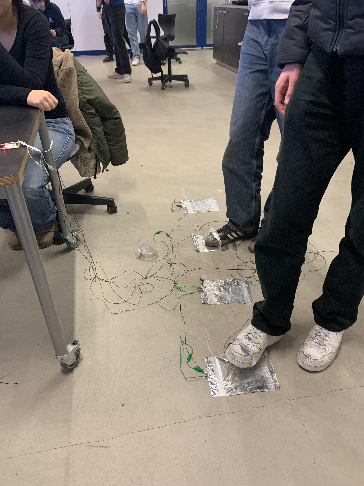
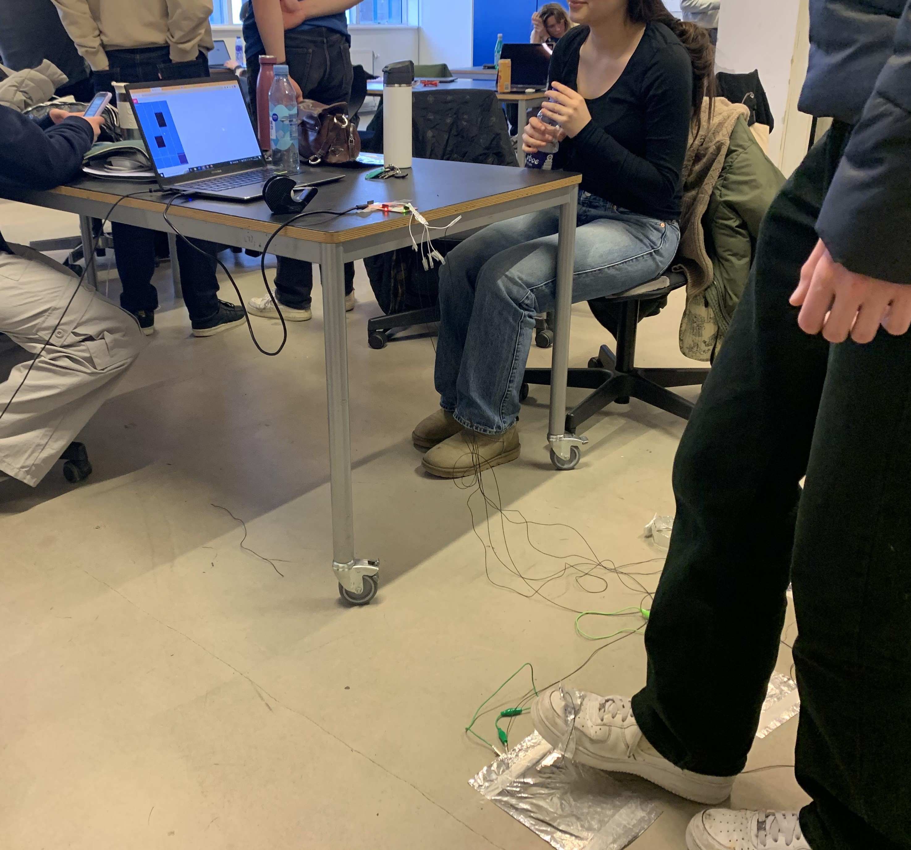
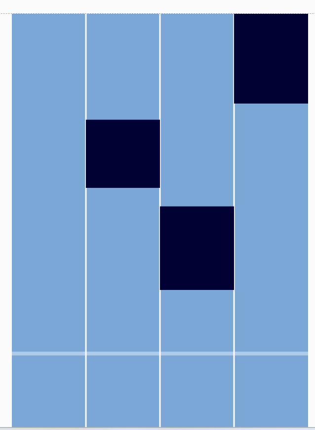
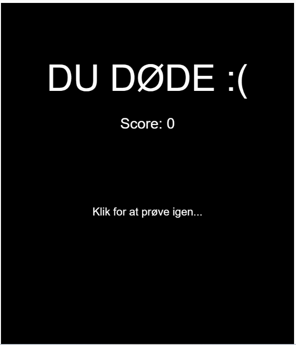
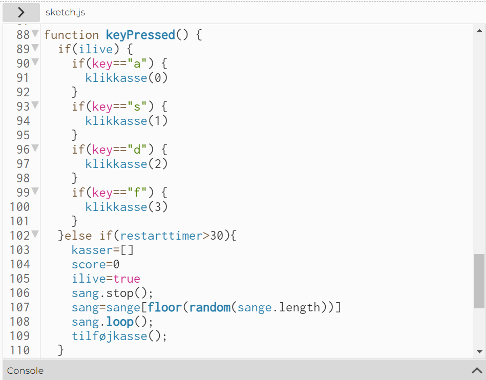

I dette forløb har vi udviklet et spil i p5.js. Vores spil hedder Pianotiles.
Link til vores spil/programkode:
Spil: Pianotiles
Programkode: Pianotiles
Ideer og krav til spillet:
Ideen bag spillet er, at skabe en måde, hvorpå man kan bevæge sig samtidig med, at man spiller. Målet var at lave et sjovt alternativ til unge, der bruger alt for lang tid stillesidende foran en skærm.
Vi har udviklet vores spil på baggrund af disse krav:
- Kan spilles af to eller flere personer, der fysisk er i nærheden af hinanden.
- Involverer et samarbejdende eller konkurrerende element, gerne inspireret af sport.
- Styres med Makey Makey og ikke direkte fra computeren.
Vores spil:
Vi har lavet et spil, der har til formål, at få folk til at samarbejde samt bevæge sig i fællesskab. Spillet kaldes "Pianotiles" og går ud på, at trykke på det sorte felt, der er tættest på bundlinjen. Trykkes der ikke på det sorte felt inden det rammer bundlinjen, dør man og spillet starter forefra. Det gælder om at opnå så høj en score som muligt. Hver gang spillet kører, starter der samtidig en sang, der spiller så længe, at man rammer de sorte felter. Denne funktion har til formål at motivere spillerne til at fortsætte, så man kan blive ved med at høre den gode sang.
Spillet styres ved hjælp af Makey Makey. Man forbinder en ring af sølvpapir til sin sko og man kan derved bruge sine fødder til at ramme felterne. På den måde har vi koblet spil, leg og bevægelse i ét spil. Spillet kan spilles af 1-4 personer.
Billeder og videoer af spillet:




Gennemgang af relevante kodestumper:
Generelt er JS opbygget af tre vigtige funktioner:
- function setup()
- function draw()
- function keyPressed()
function setup() kører først. function draw() kører hele tiden i loop og alt i funktionen gentages til programmet sluttes. function keyPressed() kører når en tast bliver trykket ned. Derudover bruges der også en del "if-statements", der er en logisk betingelse, hvor noget bliver udført, hvis betingelsen er sand.

Herover ses et udklip af vores kode. Som det fremgår i linje 88, er dette et udklip af den del, der koder for hvad der skal ske, når man trykker på tasterne. Det er altså denne funktion, der sørger for, at man kan klikke på de sorte felter og spillet kan spilles. Vi har brugt if-statements til at skabe en betingelse for, hvornår trykket skal udføres og hvilke taster der skal bruges. Vi har valgt at bruge tasterne a, s, d, f, der koder for kasser i henholdsvis felt 1, 2, 3 ,4.
I linje 102 har vi brugt et else-statement til at bestemme, hvad der skal ske hvis felterne ikke trykkes på. Her skal spillet altså restarte, sangen stoppe og scoren af antal sorte felter man har ramt vises.
Afsluttende kommentar til ændringer på baggrund af brugertest:
Hvis vi skulle arbejde videre med vores spil, bør vi overveje, hvordan man kunne implemetere bevægelse i højere grad. Som det fungerer nu bevæger man sig, men ikke i så høj grad som vi først havde tænkt. Selve spillet fungerer fint og er underholdende.